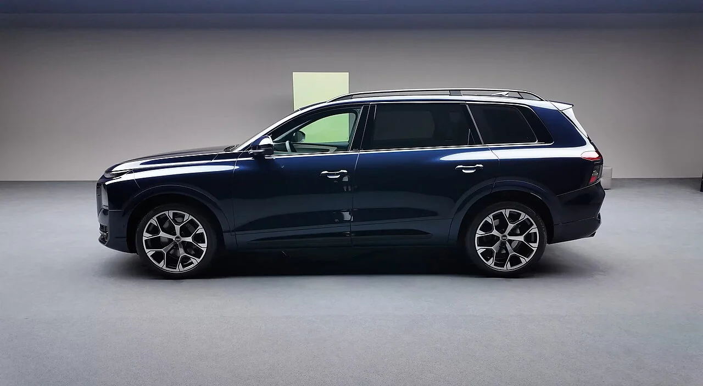
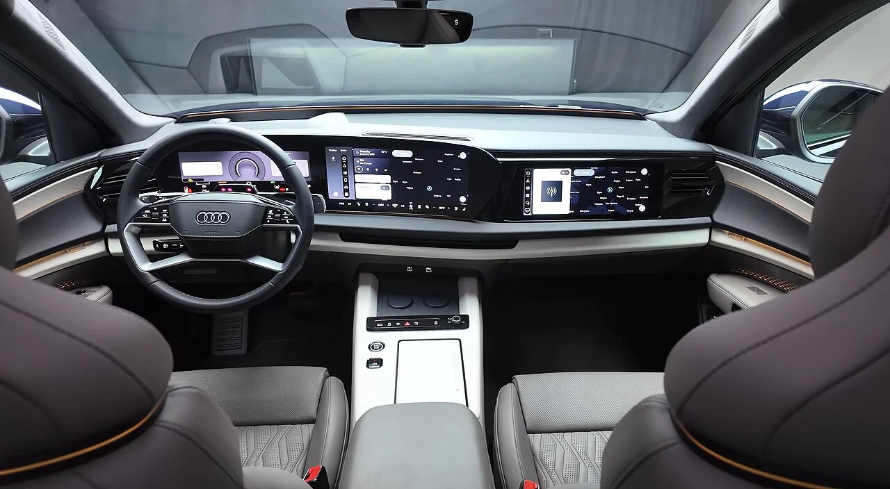

▲ 아우디 Q9 — 원래 전자식 도어핸들이 적용될 예정이었지만, CEO의 최종 시승 이후 일반 물리 핸들로 되돌아갔다
아우디의 새로운 플래그십 대형 SUV Q9에는 원래 터치 감지 센서가 도어 상단에 내장된 전자식 도어핸들이 들어갈 예정이었습니다. 물리적으로 잡아당기는 손잡이 대신, 센서를 터치하면 전자기계식 잠금 장치가 작동하는 방식입니다. 그런데 이 혁신적인 설계는 정식 출시를 앞두고 사라졌습니다. 아우디 CEO 게르노트 뵈르너가 개발 후기 최종 테스트 드라이브를 해본 뒤, 직접 이 핸들을 없애기로 결정했기 때문입니다.
1. CEO가 직접 남긴 말
뵈르너 CEO는 이 결정을 설명하며 이렇게 말했습니다. "우리는 혁신적인 도어핸들 콘셉트를 갖고 있었다. [하지만] 최종 시승을 해봤고, 이것이 혁신적이긴 하지만 소비자 입장에서는 기존 방식의 도어핸들보다 오히려 더 나쁘다고 판단했다." 신기술을 위한 신기술이 아니라, 실제 사용성을 최종 순간까지 검증했다는 점에서 이례적인 사례로 꼽힙니다. 대형 플래그십 SUV를 개발하는 과정에서 CEO가 직접 마지막 시승 단계까지 관여해 설계를 뒤집은 경우는 흔치 않습니다.

▲ 아우디 Q9 측면부 — 전자식 도어핸들 폐기 결정은 통상 2년이 걸리는 부품 변경을 막판에 밀어붙인 이례적인 사례로 꼽힌다
2. 왜 전자식 핸들이 더 나빴나
전자식 도어핸들이 실제 사용에서 불편했던 이유는 구체적입니다. 장갑을 낀 채로는 터치 센서가 제대로 반응하지 않을 수 있고, 양손 가득 쇼핑백을 들고 있을 때는 센서를 정확히 터치하기가 오히려 더 번거롭습니다. 아이를 카시트에 태우며 안전벨트를 채우는 상황처럼, 손이 자유롭지 않은 일상적인 순간에는 물리적인 손잡이를 당기는 편이 훨씬 직관적입니다. 아우디는 고급 대형 SUV를 구매하는 소비자들이 최첨단 기술 과시보다 흔들림 없이 확실하게 작동하는 신뢰성을 더 중요하게 여긴다고 판단한 것으로 보입니다.
3. 중국 규제는 결정적 이유가 아니었다

▲ 아우디 Q9 실내 — 전자식 도어핸들 폐기 결정의 핵심은 중국 규제가 아니라 실사용성 문제였다고 CEO가 직접 밝혔다
공교롭게도 최근 중국에서는 전자식 도어핸들 사용을 제한하는 규제 움직임이 있었습니다. 사고 시 전원이 끊기면 문이 안 열릴 수 있다는 안전 우려 때문입니다. 이 때문에 일각에서는 아우디의 이번 결정이 중국 규제 대응 차원이라는 해석도 나왔습니다. 하지만 아우디 측은 이 규제가 결정에 참고 요인은 됐을지언정, 주된 동기는 아니었다고 선을 그었습니다. 실제로 CEO가 언급한 이유는 오직 사용성, 즉 소비자가 실제로 느끼는 불편함이었습니다.
4. 막판 변경, 어떻게 가능했나
자동차 개발에서 도어핸들처럼 차체와 맞물리는 부품을 바꾸는 데는 보통 2년이라는 긴 시간이 필요합니다. 문 안쪽의 잠금 매커니즘, 배선, 차체 강성 시험까지 줄줄이 다시 거쳐야 하기 때문입니다. 그럼에도 아우디는 정식 출시를 앞둔 시점에 이 결정을 밀어붙였습니다. 보도에 따르면 차체 엔지니어들이 신속하게 대응해 기존 설계와의 공간적 호환성을 확보하면서 물리적 핸들로의 전환을 가능하게 만들었다고 합니다. CEO의 결단과 엔지니어링 팀의 신속한 대응이 맞물리지 않았다면 불가능했을 변경입니다.
5. 이 사례가 보여주는 것
최근 자동차 업계는 도어핸들, 기어 셀렉터, 공조 버튼까지 하나둘 터치스크린이나 전자식으로 바꾸는 추세였습니다. 하지만 실제 사용자들 사이에서는 "기술을 위한 기술"이라는 피로감도 함께 커지고 있습니다. 아우디 Q9의 이번 결정은, 적어도 도어핸들처럼 매일 손으로 직접 다루는 부품에서는 물리적 조작감이 여전히 중요하다는 것을 보여주는 사례입니다. 프리미엄 브랜드일수록 신기술 도입과 실사용성 사이의 균형을 어떻게 맞추느냐가 갈수록 중요한 과제가 되고 있습니다.